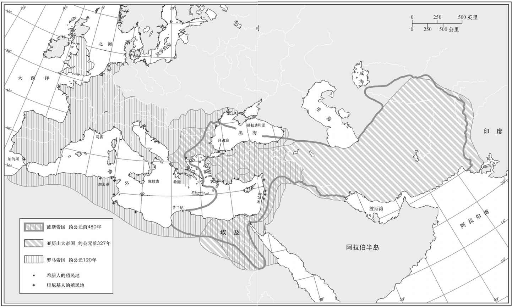

随着公元前12世纪多利安人的频频入侵，希腊堕入“黑暗时代”（见第三章第五节）。这一时期的希腊以农业为主，实行部落制和贵族政治，活动范围仅限于爱琴海区域。到公元前6世纪末，这一切都起了变化。部落组织让位于城邦；其他社会阶层起来向贵族挑战；工商业开始发挥重大作用；希腊殖民地逐渐遍布整个地中海沿岸。所有这些发展使希腊世界在其形成时期内大变样，并为古典时代扫清了道路（见地图7）。

地图7 古典时代中东和欧洲地区的诸帝国
希腊地区的地理特点是促成这些发展的一个基本因素。希腊没有丰富的自然资源——没有肥沃的大河流域和广阔的平原，而具备这些天然条件，并合理地开发和利用，是支撑如中东、印度和中国所建立的那种复杂帝国所必需的。在希腊和小亚细亚沿海地区，只有连绵不绝的山脉，这不仅限制了农业生产率的提高，而且还把农村地区隔成了互不相连的小块。因而，那种可作为区域合并基础的天然地理政治中心，希腊人是没有的。相反，在遭受入侵之后，他们在孤立的村庄里安居下来。这些村庄通常坐落在易于防卫的山地或高岗附近，这些高地既可作为神殿的所在地，又可作为遭遇危险时的避难处。移居地总体上被称为“城邦”，而避难处则被称为“卫城”或“高城”。城邦常策略地设在土壤肥沃的地方或商路附近，从而吸引来更多的移民，成为该地区的主要城市。许多小城邦就是这样形成的，相对隔绝且极其独立。
开始时，这些城邦主要依靠自给型农业、牧业和渔业。但是，到公元前8世纪初，这种经济上的自给自足因人口压力而遭到破坏。渴望土地的农民不得不到海上去当海盗、商人或殖民者，或者如时常发生的那样，三者兼而事之。到公元前5世纪时，包括黑海在内的整个地中海地区环布繁盛的希腊殖民地，这些殖民地成为与母邦一模一样的海外城邦（见第四章第二节）。
殖民地的建立引起一个最后改变整个希腊世界的连锁反应。殖民地用船把以谷物为主的各种原材料运到人口过剩的希腊本土，作为回报，得到酒、橄榄油和诸如布和陶器之类的制成品。这种贸易使希腊本国的经济急速发展。希腊的土壤较适于经营橄榄园和葡萄园，而不适于作为麦田，所以，既然小麦可以进口，多岩石的山坡也就可以用来种植葡萄树和橄榄树，故土地的开垦面积大大增加了。因此，转向商业性农业，使能够养活的人口比以前经营自给型农业时增长2倍至3倍，同样，制成品也增加了，大量希腊陶器的发掘证明了这一点，而且这样的发掘不局限在地中海周边，还深入内地，例如俄国中部、德国西南部和法国东北部。与此同时，希腊商船队在往返运送货物方面也获得很大成功。那时的货物与奢侈品截然不同，体积庞大，以如此巨大的规模运销各地，在历史上还是第一次。希腊人率先用硬币作交换媒介，硬币日渐广泛的使用也有效地促进了所有这些经济活动。
农业商品化不仅意味着获利，也意味着负债，尤其对小土地所有者来说。从前，贵族收租是以收取部分农作物的形式进行的，所以年景不好时，只好大家一道勒紧裤带度日。而现在，外国市场、货币经济和新的奢侈品相结合，使小农们受到了各种伤害，如时常不得不抵押物品，丧失赎取权，甚至失去人身自由。这一切不可避免地导致激烈的阶级斗争，使民众吵着要求废除债务、重新分配土地。同样，城市里新的富裕家庭也起来要求获得与他们经济力量相符的政治地位。他们取得了手工业工人、码头装卸工人和水手这些城市贫民的支持。于是，所有这些对现实不满的人，一道奋起反对让拥有土地的贵族独掌政权的传统政治制度。
公元前7世纪时，改革运动大大加强了。这是由于往昔在战场上起决定性作用的贵族骑兵这时已由穿戴盔甲、沉重地武装起来的步兵，也就是重甲步兵所取代。重甲步兵左臂挎盾、右手执长矛，以密集队形排列成坚固方阵，作战时步调一致，因而与以往战无不胜的骑兵对阵时，能以密密的阵势将他们打败。这一创新削弱了贵族政治权力的军事基础。同时，对那些能够在方阵服役的个体农户和工匠来说，自己的地位和影响力也获得了提升。
经济变革和军事变革一起，导致了相应的政治变革。在黑暗时代，各城邦开始时实行君主政体，后来渐渐地转向贵族寡头政治，到公元前7世纪，各城邦已由称为“僭主”的独裁者进行统治。这些雄心勃勃的领导者一般都是贵族出身，他们支持民众的要求，因而赢得了群众的支持，夺得个人权力。“僭主”一词就是指那些没有合法权利而进行统治的人，但是，这一名称不带有道德谴责的含义。实际上，僭主通常是支持平民反对特权阶级的，而且常常加速了民主政治的到来，尽管并非总是如此。
伯罗奔尼撒半岛南部的斯巴达，是与其他希腊城邦发展趋向正相反的典型。约公元前1000年前后，斯巴达人的祖先多利安人侵占了肥沃的欧罗塔斯河流域，把土著居民变成了奴隶，称为希洛人。公元前8世纪下半叶，斯巴达人征服了附近麦西尼亚的肥沃平原，从而排除了向海外扩张的需要。不过，他们为自身安全而付出的代价是沉重且无法避免的。斯巴达享受不到因与外国交往而带来的经济和智识上的促进，只能过一种很少变化的农业生活。而且，为了控制大批受管辖的居民，不得不把自己的国家组织得像一个军营。一切都得服从军事需要：体弱多病的婴孩遗弃于荒野等死，只有体质好的婴孩才许抚养。男孩从7岁起就住到兵营里接受训练。所有不满60岁的男子都得受军纪约束。奢侈品不受欢迎，个人生活几乎全被取消。早晨跳入欧罗塔斯河冰冷的河水中，餐桌上食品匮乏，用斧砍制成的木头房子十分粗糙，这一切在整个希腊都已出名。有组织的娱乐活动、集体进餐、公众事务、军事训练和执勤，这些几乎构成了生活的全部内容。这种社会制度使斯巴达人成为整个希腊最好的步兵，但是它也使得他们对写剧本、雕刻头像或系统地阐述哲学不感兴趣，也没有时间去做。
图36 斯巴达武士铜像。
在此期间，雅典人发展起一个完全不同类型的社会。雅典人不是扎营住宿在怀有敌意的居民中的一伙入侵者，他们自夸是阿提卡的本地居民。同其他城邦的希腊人一样，他们最初是实行君主政体，以后让位于由九个执政官主持的寡头政治。这九个执政官是主要执政官，全部属于贵族。不过，和斯巴达大不相同的是，雅典后来朝愈益民主化的方向发展。急速发展的贸易创造出了一个强有力的中产阶级，他们同失去产业的农民联合，要求政治自由化。公元前594年，所有派别一致同意任命梭伦为首席执政官，执掌政权，施行改革。梭伦采取的减轻社会痛苦的措施是简单而又严厉的。他将债务人失去的全部土地所有权归还债务人，让因负债而沦为奴隶的所有平民都重新获得自由，并永远禁止债务奴隶制。在政治领域，第一次准许没有财产的平民参加公民大会，不过，公民大会拥有的权力仍旧很有限。另外，他让富裕商人有机会担任执政官，通过设立更偏向民众的新型陪审法庭，还削弱了贵族的战神山议事会（最高法院）的权力。总之，梭伦的贡献在于，在组织上为以后建立著名的雅典民主奠定了基础。
梭伦改革之后的30年里，许多问题仍未解决，因而充满了斗争。虽然奴役这时已是非法的，但贫民们发现谋生仍很难。同样，贵族们虽然多少受到些约束，但仍能阻拦人民立法。在这种情况下，约公元前560年，庇西特拉图使自己成为雅典第一个僭主。在他统治的30年间，他将贵族的土地划成小块，分配给没有土地的农民，并让城市贫民参加大规模的美化城市的公共工程以获得帮助。庇西特拉图的子孙继承了他的位置，但是，他们个个昏庸无能，所以斗争更为尖锐复杂，直到约公元前506年克利斯梯尼掌握政权为止。克利斯梯尼取消了原有的部落，建立了十个实际上是按地区划分而不是基于氏族血缘关系的新部落。这一改革大大削弱了贵族的政治权力。克利斯梯尼还建立五百人会议，所有年满30岁的男性公民都有资格当代表；五百人会议除了为公民会议准备议案外，还握有最高的执政权和行政权。由于克利斯梯尼的这些改革，到公元前500年时，雅典已出现民主政治，而斯巴达仍是一个组织严密的军事化社会。